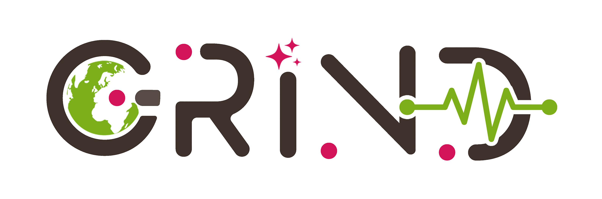

We are looking for passionate, motivated researchers to join our team. See current openings below.
The GRIND Lab addresses some of the most pressing challenges of our time — natural disasters, climate risk, and environmental inequality — using cutting-edge geospatial AI.
As a GRIND Lab member, you'll work on impactful research, publish in top venues, build technical skills, and contribute to a more resilient and equitable world.
See Open PositionsDevelop cutting-edge skills in GeoAI, remote sensing, and spatial data science through hands-on research.
Work within a supportive, diverse, and interdisciplinary team that values open science and collaboration.
Contribute to research that directly informs disaster management, environmental policy, and community resilience.
Receive mentorship, networking opportunities, and support for conference presentations and career goals.
Applications are reviewed on a rolling basis. Contact Dr. Zhou early to discuss fit.
We are seeking motivated PhD students to work on NSF-funded and internally supported research projects in responsible GeoAI, disaster risk assessment, and coupled nature-human systems. Students will develop advanced AI/ML models and apply them to real-world geospatial problems.
PLACEHOLDER: Description of postdoc position. We are seeking a postdoctoral researcher with expertise in [PLACEHOLDER: research area]. The candidate will lead a research project on [PLACEHOLDER topic], mentor graduate students, and contribute to grant writing.
UTK undergraduate students interested in geospatial AI research are encouraged to apply. Research assistants will support ongoing projects through data processing, literature reviews, and coding assistance. This is an excellent opportunity to gain research experience.
Follow these steps to apply for a position in the GRIND Lab.
Read our recent publications and projects. Identify 1–2 topics you're most interested in and how your background aligns.
Send a brief email to bzhou@utk.edu with your CV and a short statement (1 paragraph) about your interests and goals. Use subject: "Prospective [PhD/Postdoc/Undergrad]: [Your Name]".
If there's a potential fit, Dr. Zhou will schedule a 30-minute video call to discuss your background, interests, and available projects.
Submit a formal application through the UTK Graduate School and the Department of Geography & Sustainability. PLACEHOLDER: Application portal link.
Prepare the following documents for your application. Specific requirements may vary by position.
A complete academic CV including education, research experience, publications, presentations, awards, and technical skills.
2–3 pages describing your research background, specific interests in the GRIND Lab, career goals, and why UTK Geography is the right fit for you.
Three letters from academic supervisors, research mentors, or professors who can speak to your research potential and academic ability.
Official or unofficial transcripts from all post-secondary institutions. Official transcripts required for formal university application.
TOEFL or IELTS scores for international students whose primary language is not English. PLACEHOLDER: Minimum scores required by UTK.
A representative paper, thesis chapter, or technical report demonstrating your research and writing ability.
PLACEHOLDER: GRE may be optional or required depending on UTK's current policy. Check the UTK Geography application requirements.
Reach out to Dr. Bing Zhou to discuss your research interests and potential fit before submitting a formal application.